| Lage des Ortes: | 7 km westlich von Hannsdorf (Hanušovice). |
| Bezirk: | Mährisch Schönberg (Šumperk) |
| Herrschaft: | Eisenberg (Ruda) |
| Evidenznummer: | 048a |
| Abmessungen: | Höhe 101 cm, Breite 79 cm, Stärke 13 cm. |
Beschreibung:
Oben abgerundeter Gedenkstein aus dem Jahr 1898, mit deutscher Inschrift:
„Fürst Johannes Eichen XXXX jähr. Reg. Jubil. XII Nov. MDCCCXCVIII“.
17.3.2011 Die Fotografien hat Herr Jindřich Hlaváč geschickt.
 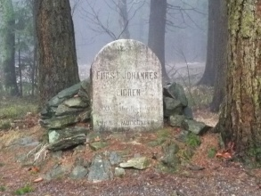
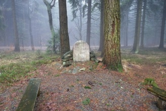
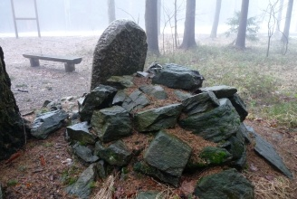
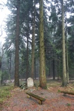
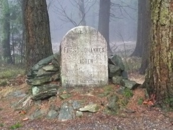
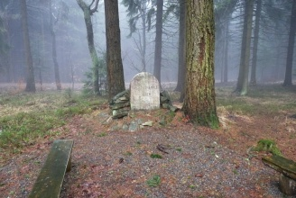
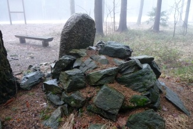
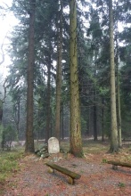
7.4.2011 Die Fotografien hat Herr Petr Vomáčka geschickt.
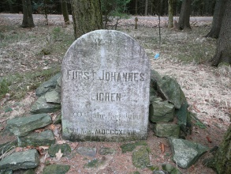
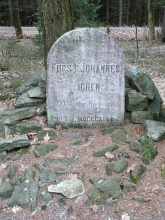
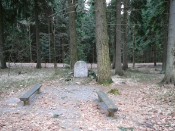
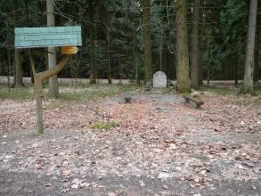
In der Dreifaltigkeitskapelle befindet sich eine Gedenkplatte mit folgendem Text:
„Anlässlich des 40 jähr. Regierungs-Jubiläums Seiner Durchlaucht Johann II. souveräner Fürst und Regierer des Hauses von und zu Liechtenstein 1858 - 1898 Josef Hübner Baumeister“
2011 - Autor der Fotografie: Herr Vojtěch Krejčí.
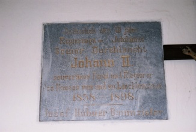
Verweise auf externe Web-Seiten:
http://www.obecmalamorava.cz/30-jubilejni-kamen-u-svate-trojice - Gemeinde Klein Mohrau (Malá Morava).
{kind=link}
{kind=link}
{kind=link}
{kind=link}
{kind=link}
{kind=link}
{kind=link}
{kind=link}
{kind=link}